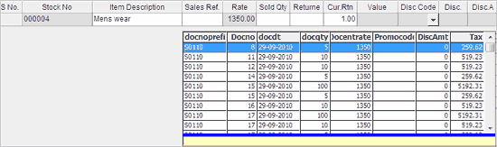

This is one of the methods to select the items to be returned/ exchanged. You can select the required item either by scanning the stock item or by entering the stock number in the direct entry grid.
In direct entry grid,
Stock No: Enter the stock number of the item or press F2 to activate Item Search window and select the required item. If the stock number of the item is entered by scanning the barcode, then the scanning of the barcode is to be done when the cursor is in this field.
On selecting the stock number,
the corresponding item details are displayed in the direct entry grid, if the item has single reference, i.e., if the item is billed in only one bill.
the list of sales bills where the selected stock item billed, is displayed in a grid, if the item has multiple references, i.e., if the item is billed in more than one bill.
A sample entry for a stock number with multiple references is displayed.

Note: On selecting a stock number with multiple references in the direct entry grid, the corresponding sales bills will be displayed after validating against the bill reference/(s), if any, selected in the Bill Ref. field in the header part.
For example, if there are two bill references selected in the Bill Ref. field in the header part, on selecting a stock number with multiple references (including the references selected in Bill Ref.) in the direct entry grid, only those two bill references specified in the header part will be displayed in the grid for selection.
Each row in the list displays the details of the item with respect to the bill in which the item is billed.
The details include, document prefix, document number, document date, quantity (billed quantity of the item in the document), rate, promo code (if applied), discount amount (if applied) and tax amount.
Select the required item from the list by double clicking in the corresponding row.
Note: You can return items without bill references along with items that have references, by accepting the item details from the direct entry grid.